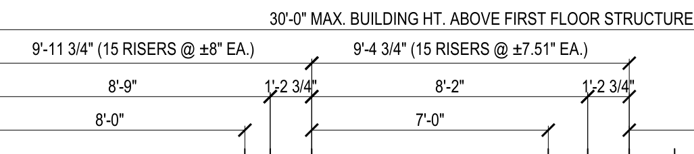
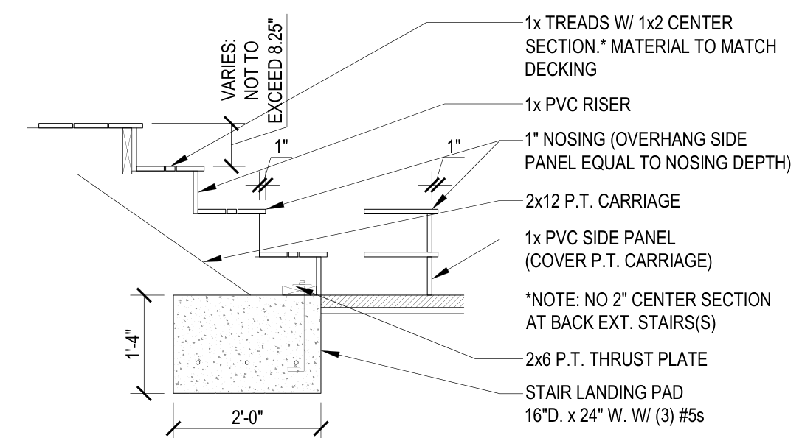
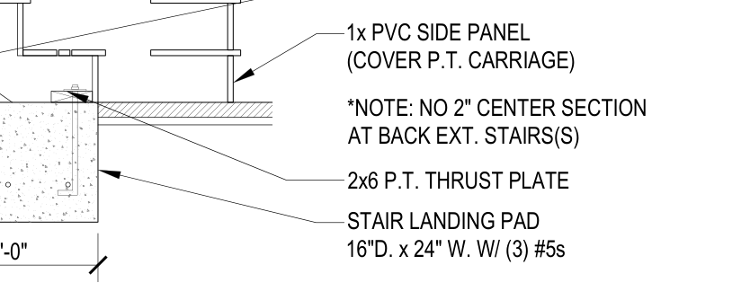
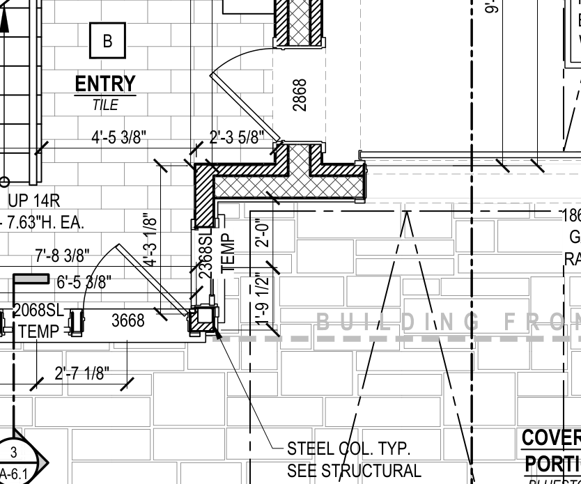
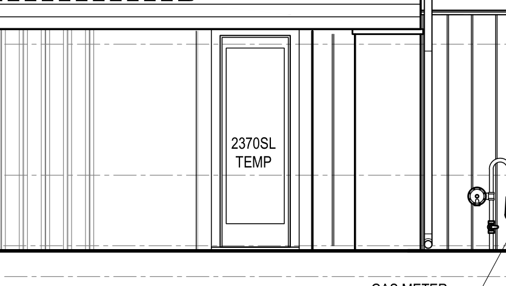

Shore house drawing check
Ten places where the drawing sheets disagree on a three-story shore house, with sheet excerpts and model views.
I found these places while building a 3D model from the drawings, to the inch. In each one, the sheets disagree with each other or with a printed number. Names and location are removed, and nothing here is a judgment on the design. Each item says what the model used.
Findings
1. Ground to first floor stair: headroom
Section 2 notes 80" of stair headroom. With the stair and the floor above where they are drawn, the clear height over the second step comes out at about 72.7". The model was built as drawn.


2. Interior stair step heights
- First to second floor: 15 risers over 9'-11 3/4" works out to just under 8" each, which is on the tall side for a house stair.
- Ground to first floor: the section prints about 7.63" per riser, but 8'-10" over 14 risers is 7.57".
- First and last step: the treads are stepped off the subfloor. Once the floor finishes go on, the first step is about 1/2" to 3/4" shorter than the rest. The last step is about 3/4" taller. Across a flight, the tallest and shortest steps end up 1 1/4" to 1 1/2" apart.


3. Rear outdoor stair and the back door
- Landing height: the rear elevation shows the landing one step below the back door. The left elevation shows it level with the door. The model follows the rear elevation, which gives 13 even steps of about 7.7".
- Step at the door: from the landing up and over the door's bottom frame is about 8.5", a bit more than the 8.25" maximum printed for the stair. The sill isn't detailed.
- Concrete pad: the pad at the bottom of the stair is drawn two different sizes, and its top level isn't given.





4. First floor height on the foundation plan
The foundation plan prints the first floor subfloor at +11.0. Every other sheet says +16.50, and the block height on the same foundation sheet only works with +16.50. The model uses +16.50.


5. Dormer roof slope
The roof plan prints 5:12 on the dormer. The elevations and Section 1 all draw it closer to 4.2:12. At a true 5:12, the dormer ridge would sit about 3" above the main ridge it runs into. The elevations note that pitches are approximate, so the model follows the elevations.
6. Big sliding door on the first floor
The plan draws the opening 282" wide. The front elevation draws the door 276.5" wide, about 5 1/2" narrower. There's no size chart for this unit, so the model uses the plan.


7. Garage door
- Size: the tag reads 18'-6" wide, but the plan opening is about 15'-0 1/2".
- Panels: the elevation shows panels only on the left part, because a car is drawn over the rest. The model mirrors the drawn panels onto the right half. The real panel layout is not on the sheet.

8. Door and window tags that don't match
- Back doors: the plans call for inswing doors, the elevations for outswing.
- Front entry: the entry door and sidelights are tagged as different sizes on the plan and on the elevation.
- First floor rear windows: three windows are ACW 2840 on the plan and ACW 2848 on the elevation.
- Size chart: a few sliders and casements are drawn slightly different from the maker's chart size for their tag.





9. Flood vents
The notes say 5 vents (4 required). The foundation plan marks 15, and the ground floor plan draws 6. One east wall vent also sits in a different spot on the plan and on the side elevation. The model includes the 6 from the ground floor plan.
10. Half-story deck step
The plan writes the deck surface about 1 1/4" below the indoor floor. Section 1 draws it flush. The model uses the written number, so there's a small step at the deck doors.


Also: Shore house dimension report.